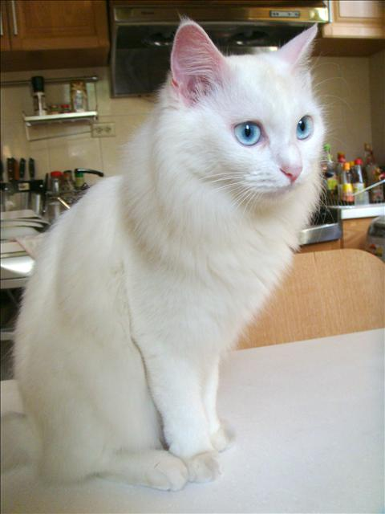

土耳其安哥拉貓
土耳其安哥拉貓原產於安卡拉。
16世紀時，土耳其蘇丹王曾將此種貓獻給歐洲的貴族作禮物。此種貓體線幽美，四肢修長，尾巴覆蓋著濃密的被毛，頭部呈倒三角形，鼻長，有核桃形眼，目色和毛色相同。耳大且耳根寬，耳越往末端越細。
土耳其梵貓該貓歷史可追溯至1955年，一英國人在東土耳其梵湖畔發現玩水中的貓，並將其帶回英國。1970年代傳到美國，數年後開始繁殖。毛色白不帶黃，有些貓身體會局部帶有顏色的「姆指痕」，但斑紋局限在頭和尾巴。
這種貓頭腦聰明，教養輕鬆。有著健壯的體型及敏捷的身體。此外，這種貓喜歡水，這也是罕見的事。此種貓討厭狹隘的環境，因此要飼養在牠能自由活動的地方。